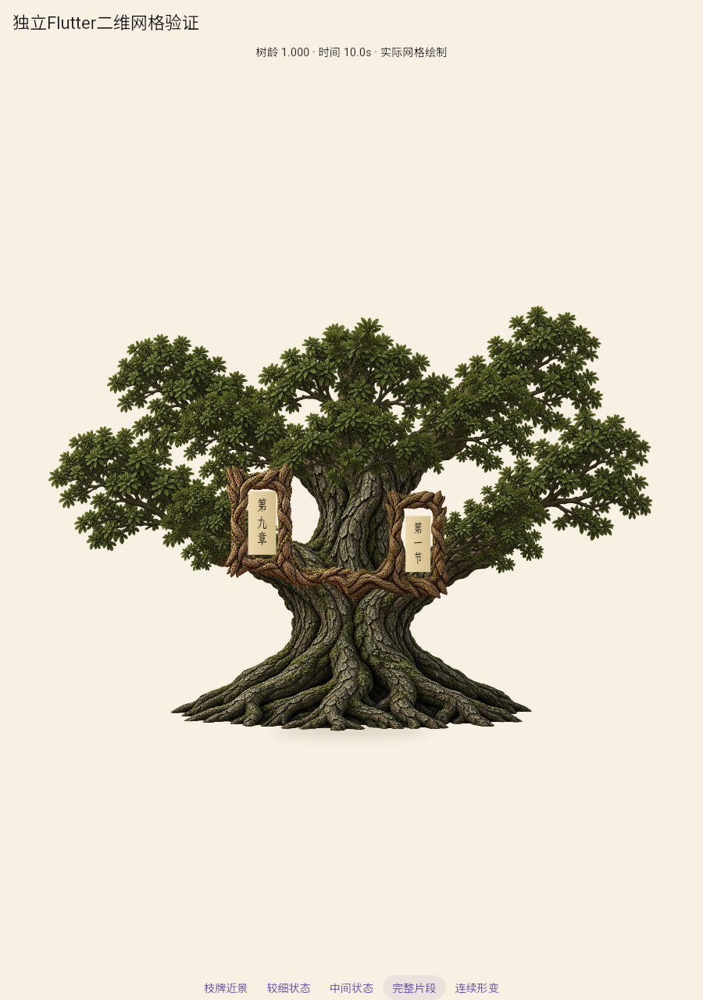
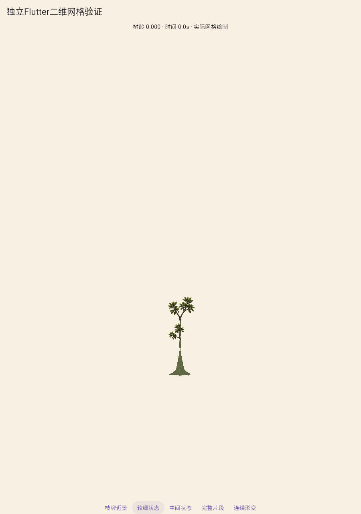
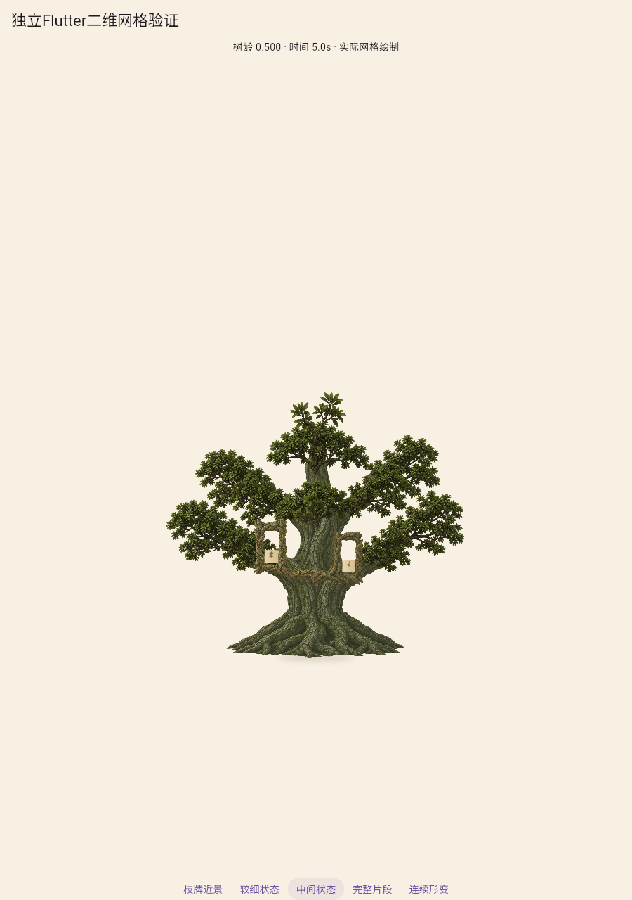
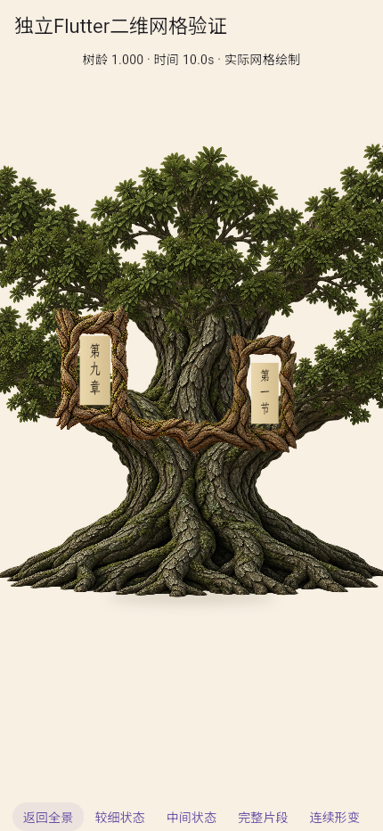
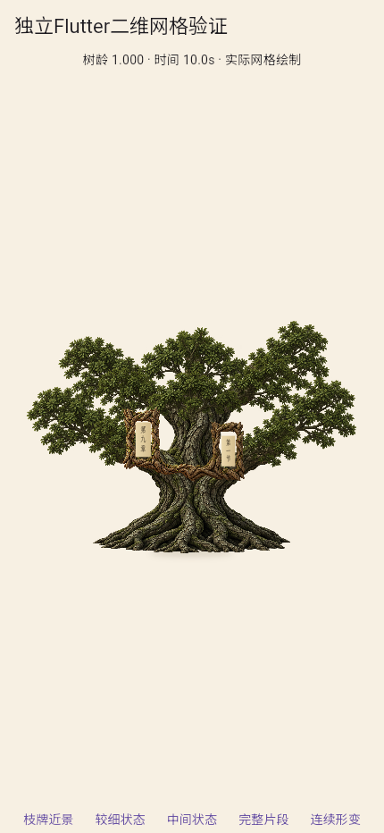

一体根颈、主肩枝与横展冠层：第一套完整候选
根颈不再有独立覆盖接缝，但矮宽比例、幼苗细干/根幅、规则横层及木牌色差仍未通过。剩一次整体修改，A2未通过。
 对照根干连续体积、冠干比例与冠层层级。
对照根干连续体积、冠干比例与冠层层级。

连续木体和横展叶枝，整树仍过于矮宽。

局部骨架收枝，幼干过细、根幅与调色失衡。

早中龄肩枝与冠层仍像规则横层。

纸框同源，木牌偏暖，与树体材质色差明显。

430×932浏览器视口，不代表正式页面或实体手机。
同一固定相机连续成长
101个实际Flutter状态，约10.1秒，显示树龄与时间；10fps仅为编码速率。查看2.5/5/7.5秒中间姿态。
运行与哈希 · 源资产及解剖数据 · 同构建旧分支回归 · 文件与媒体复核 · 整体审查与第二轮条件